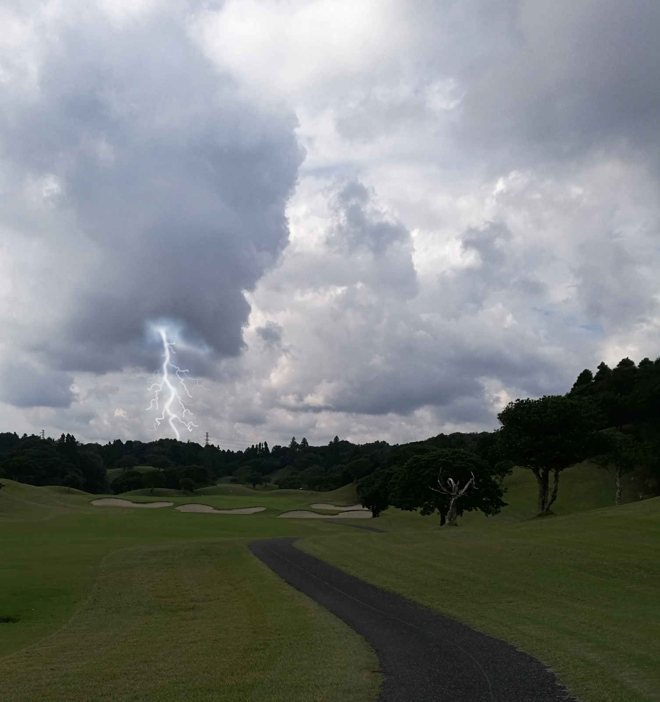
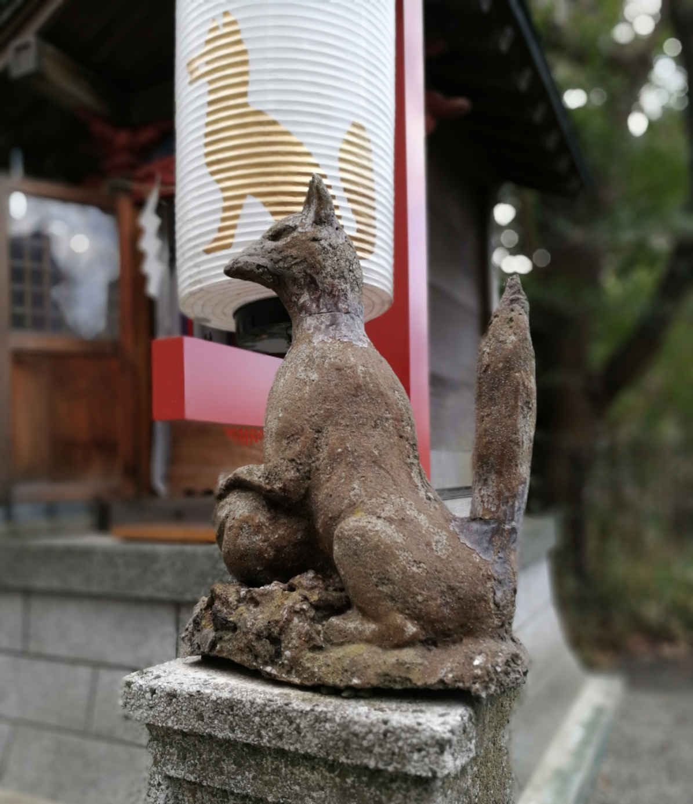

| アームチェア・ゴルファーの密やかな追憶 〜ゴルフ・ショート・ストーリーズ Vol.2〜 | |
| 金子忠義 | |
| (2019) | |
ゴルフに限らず、アウトドアで行うスポーツにはよく「自然と戦う」などといった惹句がつけられるが、これまで人類が自然と戦って、勝ったためしがない。
自然の中でプレイするスポーツ（たとえゴルフ場が人工造形物だとしても）は、自然を畏敬し、受け入れ、自分の技量に合った対処をしなければならない。
時には蛮勇だけで向かうのではなく、後退することも大切だ。
自然の中でプレイする時、これを忘れると、とんでもない不幸が待ち受けている。
たとえばこんな話...。
第１話 有効期限切れ
夏はゴルフがもっとも楽しい季節だ。
強い陽光は芝の緑と青い空、白い雲、そして黒い影のコントラストをはっきりさせて鮮やかな光景を作り出す。
汗だくになって必死にボールを追いかけていると、夏休みの子供に返った気分にさせてくれるところがまた、いい。
熱中症対策は確かに必要だが、それさえも忘れるほど水をガブガブと飲んで、時には頭からぶっかけたりしてウェアまでびしょびしょにすると、日常ではけっして味わえない開放的な気分になる。
夏のゴルフは楽しい。
雷にさえ、気をつければ...。
■
仲間の1人に、図抜けた体格の男がいる。
『彼』の身長は190cm近く、体重も85kg前後。顔が小さくて肩幅が広く、しかも足が長い。
日本人離れした体型だ。
さらに言うなら顔つきも日本人離れしている。
小柄の仲間の1人は、その体型を羨ましがって（多分に嫉妬が入っていて）まるで「ヌビア人みたいな」体型と呼んでいる。
ヌビア人とは古代エジプト時代、アフリカ大陸南部を居住地としていた人種で、現在のアラブ系ヌビア人種と違い、身長がかなり大きかったそうである。もちろん、仲間の1人はヌビア人を見たこともなく、単なる知識にしか過ぎない。
『彼』は額が広く肌は褐色気味、髪もやや縮れ毛っぽいことに加え、ギョロッとした眼をしているので、きっとアフリカ系人種の想像だけで揶揄したのだろう。
これだけの体型を持つ日本人男性はそれほど多くはないが、いないわけではない。
また、これほどの体型を持っていても見せかけだけの場合だってある。
しかし『彼』は違った。
『彼』の鉄人伝説は枚挙に暇がない。
バイクで事故った時、相手の軽自動車は『彼』の身体がぶつかって全損（実際はボディの一部がベッコリ凹んだだけだが）したのに『彼』は打ち身だけで済んだ、とか、自販機設置のアルバイトをしていた時に自販機が倒れそうになったので顔で受け止めた（自販機は平均で400〜450kgある）けれど鼻の骨を折っただけで済んだとか、突進してくるイノシシを倒して鍋にして喰った、とか。
もちろん野生児ではないので最後の話は例の仲間の1人が皆でジビエ料理を食べていた時に吹聴したらしいのだが、いつの間にか『彼』なら本当にやりそうだ、いや実際にやったんだろ、と回りが既成事実にしてしまうところに『彼』たる由縁がある。
30歳を超えてこれだけの体型を持っていればゴルフも上手くなるものだが、得てして資質に恵まれた者は資質を過信しがちである例に漏れず、『彼』もまたスキルを向上させようという気概はまったくなく、資質だけでゴルフを楽しんでいる。
ドライバーの飛距離は仲間内でトップだ。
それが『彼』の大きな自慢であり、また過信でもある。
その極端なアッパースイングはアイアンで矯正されることがなく、時としてボールよりも削り取った芝や土くれの方が遠くへ飛んでいることがある。
大ダフリというより、バンカーのエクスプロージョンだ。
「大男、総身に知恵が回りかね」というやつである。
先に上げた仲間の1人が得意気にこれを言うと、『彼』は必ず「小男、知恵が回ってもたかが知れ」と返すので、いつも舌戦は泥仕合になる。
その泥試合もまた、仲間内ゴルフの楽しみのひとつだ。
そんな泥仕合を飽きもせず繰り広げていた真夏日に、事は起こった。
『彼』は例によってドライバー以外はさっぱりだったが、それでも『彼』は真夏の、そして仲間とのゴルフを楽しんでいた。
昼には、真夏だというのにトンカツ定食をがっつり喰らい、大ジョッキでビールを飲む。
午後のスタート時には太鼓のような腹をしていたが、やはり『彼』ほどの体力があると消化能力も高いらしく、皆がへばり始める頃でも精力的に動いていた。
...精力的に動かなければならないほど、散らかったゴルフという意味でもある。
いくつかのホールを終えた後、ヒュッと冷たい風がフェアウェイを駆け抜けた。
それから小さく、短く雷音。
全員がプレーを止め、空を見上げた。まだ、空は青かったが入道雲の先端が山間に見えた。
「...これってヤバくねえか？」
すでにグリーンへ第2打を乗せた仲間の1人が言った。
「うん、...ちょっと怖いよな...」
ゴルフ場には雷がよく落ちる。しかも山や丘に囲まれているコースは雷雲が見えにくい。
最近のゴルフ場は人工衛星による天気予報を利用して雷の発生を予測、危険性がある時は警報を鳴らしてプレーヤーの避難を促すシステムを取っているが、それでも雷雲発生の速度に追いつかない稀なケースもある。
また雷音が鳴った。今度は低く、そして長かった。
「おい、ちょっと中止しようぜ！これ、危ないよ！」
すでにグリーンオンしている3人は急いでカート方向に走っていった。
『彼』はグリーンオンに失敗、横のラフから抜け出せず手こずっていた。
彼の後ろには大きな杉がそびえていた。
「おい！そんな大きな木の下は危ないぞ！こっちに来い！」
3人がカートから『彼』に向かって大声を上げた。
「まだ警報鳴ってないし、大丈夫だよ。とりあえずグリーンに乗せたらそっちに行くから」
『彼』がそう言ってウェッジを振り上げた瞬間だった。
辺りは閃光に包まれ、シンバルを思いっきり叩いたような轟音が響き渡った。
それから空がいきなり真っ黒になると、大粒の雨が激しく降り出した。
カートの3人は閃光で眼が眩んだ。
ようやく焦点が合った時、『彼』はラフで仰向けに倒れていた。
回りには樹皮や枝が大量に落ちている。
3人は慌てて、ずぶ濡れになりながら『彼』に近寄った。
白目を剥き、口を大きく開いている。元来、『彼』の歯は丈夫で目立っていたが、それがさらに強調され、まるで黒いガイコツを見ているようだった。
髪はさらに縮れ、眉やまつ毛からは煙が立っていた。ゴルフウェアはあらゆるところが焼け、まだ焦げたニオイがする。
仲間の1人が大声で叫んだ。
しかし、その声は誰にも聞こえなかった。全員がシンバルの轟音で耳をやられていた。
1人が急いで心臓マッサージを施し、もう1人はカートに駆け寄ってキャディマスター室に連絡した。もう1人は自分の鼻をつまんで『彼』の顎を支えていた。
人工呼吸するのを躊躇していたのだ。
「ぶはっ！」
心臓マッサージ3セットで彼は意識を取り戻した。顎を支えていた仲間はホッとした。
彼の意識が戻ったからなのか、それとも人工呼吸しなくて済んだからなのか、それは彼自身しか分からないけれど。
『彼』はスタッフ用カートに乗せられるとクラブハウスのエントランスへ行き、やがてサイレンを鳴らしてやってきた救急車で病院に直行した。
その日のゴルフは、そこで終わった。
雨はすっかり上がり、また真っ青な空が広がった。
■
1週間後、仲間が見舞いに行くと『彼』は精密検査を終えて一般病棟に移っていた。
蘇生措置が早かったこと、直撃雷ではなく『彼』のそばの木に落ちた誘導雷だったこと、雷の威力が比較的小さかったことなどが『彼』にとって不幸中の幸いだった。
『彼』の強靭な肉体も、『彼』の命を取り留めるのに役立っただろう。
「よう、調子はどうだい？」
「ああ、だいぶ良くなったよ、まだちょっと変だけれどな」
確かに体調は良さそうだったが、半袖のパジャマの下、右腕には雷に打たれた時特有のやけど、リヒテンベルグ図（まるで樹木の枝、あるいは雷の放電図形そのもの）と呼ばれる跡が刻印のように残っていた。
「変って？頭が痛いとか、体の一部が動かないとか？」
仲間の1人が心配そうに聞いた。
「いや、そういう痛いとかじゃなくて...もちろんまだ関節とかは痛むんだが...なんか、妙に頭の芯がすっきりしているというか...」
3人は顔を見合わせ、それから1人が言った。
「...電気マッサージかよ」
『彼』を除く3人は声を出して笑った。
『彼』はその冗談を取り合わず、遮るように言った。
「ところでさあ、次のゴルフっていつ？」
■
秋に入って、『彼』のゴルフは一変した。
それまでの『ヌビア人みたいな』体型の資質だけ頼っていたゴルフが、とても理論的に変わった。
ゴルフのセオリーを守り、いたずらに冒険をせず、時には刻むことも厭わない。
コース設計者の意図を汲み取り、罠に落ちるのではなく利用することすら覚えた。
元来、体型という資質だけなら図抜けたものを持っている。
それが理論武装したのだからゴルフの腕前は瞬く間に上達、フェアウェイ脇の広葉樹から枯葉がすっかり落ちる頃になると仲間は誰も彼に勝てなくなった。
「俺も雷に打たれてぇ...」
仲間内の1人が冗談とも本気ともつかないことを、ぼそ、と呟いた。
それからしばらく、仲間内では「俺も雷に打たれてぇ」が流行り言葉になった。
しかし、残念なことに変わったのはゴルフだけではなかった。
早朝、フェアウェイに降りた霜が地熱で湯気になる頃から『彼』は「指導」するようになった。
最初こそ「もう少しアドレスの足を狭めた方がいいよ」とか「左脇の締めが足りないんじゃないかな」などと謙虚な言い方をしていたが、やがて「だからその打ち方じゃスライスが出るって言ったろ？」とか「アプローチに対する考え方がそもそも間違っているんだよ」などと上から目線の発言が目立つようになってきた。
何事も、教えを乞うた時以外にアドバイスしてはならない。
とくにゴルフは。
そしてスキルが高い人ほど、それをわきまえている。
さらに。
『彼』は打つ前に「宣言」するようになっていた。
「このホールのインターセクション・クロスポイントは右側バンカーの先だから、フェードで220ヤード打てばいいんだよ。見てて？」とか「あの木はインテンショナルでフックをかければグリーンに乗るだろ」などと、とにかく煩い。
それを言わずに実行すれば称賛に値するのだが、成功確率がそれほど高くないので嘲笑のネタになる。
いつものように会話の泥試合になれば楽しく過ごせるものを、『彼』は失敗すると必ず「ちょっと深く入っちゃったかな」とか「ホリディコースだから遊んじゃったよ」などと言い訳をする。
年が明けると、誰も「雷に打たれてぇ」とは言わなくなっていた。
■
「大会に出ようと思うんだ」
コブシが真っ白な花を咲かせる頃、『彼』は言った。
『彼』が挙げた大会の名前は本戦に出るまで地区予選を何度も通過しなければならない伝統ある大会だった。
ゴルフに限らず、どのアマチュア大会も規模が大きくなるほど、現役の大学生やタイトルホルダーといった実力者が集まってくる。
ゴルフもクラブチャンピオンクラスがこぞって参加してくるので（雷に打たれたゴルファーはさすがにいないが）多少、上手くなったところで相手にならない。
それどころか、上位進出を狙うゴルファーは同じパーティにあまりの初心者がいることを嫌うし、ルールやマナーをきちんと実行できない場合は厳しく叱責することだってある。
大会はたとえ予選であっても仲良し同士が楽しむゴルフではない。
その緊張感を味わうために出場するゴルファーもいる。
つまり、それなりの「覚悟」が必要なのだ。
短期間の上達は『彼』に「覚悟」を隠す妄想と傲慢を与えた。
『彼』の眼には、本戦でカップを掲げている自分の姿しか見えていなかった。
案の定、1ヶ月後の1次予選を『彼』は突破できなかった。
『彼』は予選のゲームで何が起きたのか、つまりどのような屈辱を感じたのか一切言わなかったが、その後、仲間で回る時は以前と明らかに違った。
かといってドライバーだけが大好きな、陽気な昔に戻ったわけでもない。
傲慢さはすっかり消えたものの逆に口数が少なくなり、1打ごとに自虐的なことを呟く。
体型を活かした大きなスイングは見る影もなく、そっと、神経質にクラブヘッドをボールに当てている。
その姿は、ゴルフに怯えているようだった。
「どうしちゃったんだ、あいつ...」
仲間の1人が『彼』のショットを見ながら言った。
「予選会でよっぽど痛い目に遭ってきたんだろ？最初はいい気味だと思ったけれど、あそこまで落ち込まれるとなあ...」
もう1人の仲間が言った。
「元々、気分屋なところがあるからな。木に登るのも早けりゃ叩かれ弱い部分もあるし。いずれにしろ、このままじゃ一緒にゴルフできないだろ？またあいつ、ショット打てなくて固まっているし...」
2人の視線の先には、打ちやすいフラットなフェアウェイなのにボールを前にして地蔵のように固まっている『彼』がいた。
「こんなんじゃだめだ...こんなんじゃだめだ...こんなんじゃだめだ...」
『彼』は固まったまま、この言葉を呪文のように何度も繰り返していた。
「逃げちゃダメだ」を繰り返す碇シンジ君のように。
「もう1回...雷に当たった方がいいんじゃないか？」
「雷の有効期限切れか？」
2人は顔を見合わせたが笑いではなく深い溜息が出た。
■
『彼』に雷が落ちて（正確には誘導雷だが）1年、また夏がやってきた。
『彼』の情緒不安定はいっそう、ひどくなった。
仲間も誘わなければいいのに、普段はまったく正常だし、本人も行きたがるものだから懲りずに誘ってしまうのだが、ゴルフ場に入った途端、始まる。
「あいつ、最近になってますますおかしくなってない？」
仲間の１人が言った。
「ぶつぶつが増えてんだよ...前は『こんなんじゃだめだ』だったろ？」
「今、違うの？」
「うん、今は『消えちゃう...消えちゃう...』って...」
「何が消えちゃうんだ？」
「たぶん、腕のやけどのことじゃないか？」
「それで、夏だってのに長袖着てんのか...」
「長袖着たって消えるもんは消えるだろ！」
3人は同時に頷いた。
その日、午後になってまた夏一番の気温まで上がった。
空は真っ青だったが山間には真っ白な入道雲のてっぺんが見えていた。
あの日と同じように。
ゴルフ場の雨雲は見た目よりも近い。
真っ白な入道雲は躊躇する間もなく空を真っ黒に覆うと驟雨が走ってきた。
「ちょ、ちょっと避難しよう！」
１人が言うと残りの２人も慌てて駆け出し、カートの中に滑り込んだ。
「あれ...あいつは？」
体を拭きながら辺りを見回すと『彼』は驟雨に叩かれても（毎度のことで恐縮だが）地蔵のように固まったままだった。
「箕と菅笠、被せてやった方がいいんじゃないか？」
仲間の１人が言った。
「はは、ヌビア人地蔵の恩返しってか？」
仲間の１人が答えた。
「ばか！そんなこと言ってる場合かよ！雷が落ちてくるぞ！」
強い口調で残りの１人が言った。
「そ、そうだ！」
３人がカートから大声を出す。
「おーい！やめろ！こっちに来い！また雷が落ちるぞ！」
しかし３人の声は驟雨が地面を叩く音で『彼』まで届かない。
次の瞬間、眩い閃光が彼を闇から浮かび上がらせると間髪を入れず激しい雷音が鳴り響いた。
「い、今のは近かったな」
目と耳を塞いだ３人がもう一度『彼』を呼び寄せようとした時だった。
『彼』はゆっくりと上空を見上げた。
また閃光と雷音。
しかし『彼』はまったく動じず、上空を見上げた時よりもさらに時間をかけ、持っていた５番アイアンを頭上に高く掲げようとした。
「な、なにしてんだ、あのばか！」
「あいつ...もしかして...」
「もう一度、雷に打たれようとしている...？」
３人は顔を見合わせた。
それから高く５番アイアンを掲げた『彼』を同時に見た。
『彼』は激しい雨と閃光と雷音の中で、まるでエクスカリバーを抜いたアーサー王、シナイ山で十戒を突き出すモーゼ、もう少し分かりやすく言えばレイア姫を抱えてライトセーバーを掲げたルーク・スカイウォーカーのように雄々しく見えた。
「打たれろ！」
カートから仲間の1人が叫んだ。
「雷にもう1度打たれろ！そして自分を取り戻すんだ！」
残りの2人も一緒になって必死に叫び始めた。
「そうだ！お前なら大丈夫！頑張れ！全身に雷を浴びろ！」
仲間の必死の声は『彼』に届いた。
彼は時折の閃光でずぶ濡れの全身を見せ、5番アイアンを掲げたままカートの仲間を見ると、ゆっくりと頷いた。
そこにはゴルフに怯え、地蔵のように固まって（広い）額にべっとりと脂汗を流している『彼』の姿はなく、尊厳すら漂わせていた。
仲間の1人が思わず「おおっ」と叫んで手を合わせた。
３人は固唾を呑んで『彼』を見守った。
そしてあの時のように、激しい閃光と耳元でシンバルを叩いたような轟音が響き渡った。
3人は眼を瞑って耳を塞いだ。
それから恐る恐る、『彼』の方を見た。
『彼』は相変わらず5番アイアンを頭上に掲げて眼を瞑っていた。
しかし、折れた枝や剥けた樹皮が散乱しているわけでもなければ、彼の髪や眉毛が縮れているわけでもない。ウェアはずぶ濡れだったけれど、どこも焦げてはいない。
何も、変わっていなかった。
『彼』の尊厳はまったく消え失せ、気の抜けた炭酸飲料のボトルのように見えた。
空は瞬く間に雨雲が走り去り、陽光が差して芝の雨粒をキラキラと輝かせていた。
「...あれ？」
『彼』は５番アイアンの先を見つめた。
その時、ホールをセパレートしている林の向こう側から『大変だ！』という声が響いた。
3人がカートから隣のホールを見ると、かなり大柄な男が倒れている。
ところどころ、ウェアが焦げているようだ。
メンバーの1人がカートに走り、1人が心臓マッサージを行い、そして1人が人工呼吸をためらっていた。
やがて、遠くから救急車のサイレンが聞こえた。
３人はカートから降りて『彼』に近づいていった。
空はすっかり抜けるような青さを取り戻していた。
「そろそろ、それ、降ろしたら？」
仲間の１人が言うと、『彼』は落胆と羞恥が入り混じった表情を見せ、それから未練がましく５番アイアンを降ろした。
隣のホールにスタッフ用のカートが到着していた。
大柄の男は他のメンバーに抱えられながらも、意識がある様子でよろよろしながらも歩いていた。
「...続き、しようか？」
仲間の1人が言うと、『彼』は諦めきれぬ表情でずぶ濡れのまま、第2打を放った。
『彼』特有の超アッパースイングが炸裂し、地面が爆発して『彼』は泥だらけになった。
ボールはわずか10ヤードほど先をころころと転がっていた。
『彼』は泥を拭おうともせず、走ってボールのところまで行くと素振りもせず、またチョロった。
もう、地蔵ではなくなっていた。
仲間の1人が言った。
「...すっかり、元に戻ったみたいだな」
「なんか憑き物が落ちたって感じ？」
もう1人が言った。
「いや...」
最後の1人が言った。
「きっと、有効期限が切れたんだ、雷の。普通、有効期限ってだいたい1年だろ？更新手続き、忘れちゃったんだな...」
3人が同時に、うん、うんと真面目な顔で頷いた。

ゴルフ場では思いがけない訪問者を見かけることがある。
野生動物だ。
グリーン奥からアプローチしようとアドレスを取った途端、後ろをアオダイショウがガサガサと枯葉の音を立てて過ぎ去ったこともあるし、鹿の親子は平気でフェアウェイを横切るのでプレイを一時中断しなければならない。
スコットランドのリンクスではピーターラビットのモデルになったアナウサギをよく見るが、日本だって木々の陰にニホンノウサギが出没する。
そも、ゴルフはアナウサギの掘った穴に羊飼いが石ころを入れて遊んでいたのが起源とも言われている。
ゴルフ場と野生動物の関係はけっして浅くない。
次はそんなゴルフ場に生息している野生動物の話。
第2話 欲望は霧の中に
中学生からの付き合いですでに中年の域に入った上野武宏、小坂雅史、高木達也、守谷博信の4人はカートに乗ってスターティングホールへ向かった。
4人とも、初めて回るコースだ。
上野がゴルフサイトの無料招待券に応募したところ、抽選に当たったので4人とも喜んで参加した。
「普通、スターティングホールなんてクラブハウスの前にあるものだけれどな」
「口コミにもそれ、書かれてたよ。俺達がこれから行く東コースは増設だから仕方ないよ」
カートの後部席で高木が言うと、助手席に座っていた上野が答えた。
「だいたい、プレーフィー無料で文句言うやつも珍しいよな」
カートを運転している守谷がいつものようにライバル関係の高木にツッコミを入れた。
「まあ、スタートホールまでの距離は長いけれど、ほら、景色を楽しむのもゴルフの愉しみのひとつなんだから」
高木の隣に座っている上野が機嫌を取るように言った。
「この景色？」
高木が顎を軽くしゃくりあげた。
確かに、お世辞にもきれいとは言えなかった。
きつい傾斜の中、広葉樹が密林を形成しており、木々の枝が木漏れ日を遮って薄暗くなっている。
たぶん、1年中暗いのだろう。側溝にはコケやシダがびっしりと生えていた。
その景色を霧が隠し始めた。
「まいったな。この時間で霧かよ」
「いいじゃねえか、霧が出て前が見えないとスイングの時、ボールをきちんと見ようとするだろ？お前、ヘッドアップで悩んでいたじゃねえか」
守谷が振り向き、高木をからかった。
その時、カートががたん！と揺れた。
3人が慌ててカートにしがみついた。
「おい、前！前見て運転しろ！今、なんか踏んだぞ！」
「お、悪い、悪い。しっかしすごい霧になってきたな。なんか落としてねえか？それと何を踏んだのか、ちょっと小坂、見てきてくれよ」
「おう、ちょっと見てくるわ」
守谷がカートを止めて言うと助手席の小坂が答えた。
小坂は180cmを超える長身だ。
スラリとした体格で学生時代からテニスやスキーをやっていて、スポーツはなんでもソツなくこなす。
ついでに甘いマスクをしているので学生時代はよくモテた。
今でも独身なので初対面の女性からは人気がある。
長身を活かした大きなスイングアークから打ち出される飛球線は仲間内でもっともたくましく、そしてきれいだ。
残念なのは小技がまったくダメなこと。つまりパーオンしないとボギーはおろかダブルボギーも危うくなる。
要するに、大雑把なのだ。
小坂の場合、その原因は多分に性格が由来している。
女性にモテると言ったが、それはあくまで初対面のこと。
親密または特定の関係になる以前であれば女性も小坂もイチャイチャする分には楽しいが、接している時間が長くなると、女性は小坂の大雑把な性格やコミュニケーション能力の不足から飽きたりイヤになったりして離れていく。
だから彼女が頻繁に変わって回りから嫉妬の対象になることもあるが、小坂を含めてモテる男性が彼女を頻繁に変えるのは本人の意思ではなく、むしろ女性が離れていくことが理由なので、彼女を頻繁に変える男性に対して嫉妬するのは間違い。むしろ同情すべきなのである。
最近はゴルフ仲間もそのことが分かってきたので小坂が彼女を変えていると「ああ、またか」と思って嫉妬（もちろん同情も）することはないが、仲間内に対してもコミュニケーション能力の不足を露呈するから時折、相手をおおいに怒らせる。その原因を本人が気がついていないから始末に悪い。
相手を怒らせることにかけては確信犯の守谷でさえ、小坂の天然ぶりに振り回されることがある。
この時も、小坂にもう少し注意深い洞察力があったら、この後に起こる悲劇は避けられただろう。
小坂は霧の中を歩いていき、カートが踏み潰したと思われる板を拾った。
『この先・・・禁止！』と板に書かれていた。『・・・』の部分は泥がついていて読めなかった。
「なんだ、これ？」そう呟くと、小坂は板を道路脇に投げ捨て、カートに戻った。
「大丈夫だったよ。なんにも落ちてなかった」
「何を踏んだんだ？」
運転席の守谷がそう尋ねると、『なんか板の切れっ端』とだけ答えた。
「ふーん、じゃ行くか！」
そう言って守谷はカートを走らせた。
しかし、霧は一向に晴れることはなく、カートはなかなか次のホールにたどり着かない。
「なあ、ちょっとアクセス、長くねえ？」
高木が言った。
「うん、なんかもう5分ぐらい走ってる気がする」
隣で上野が言った。
「まあ、霧の中だから不安が時間を長く感じさせることはあるが...確かに長いよな。小坂、さっきの板の切れっ端って道案内の看板とかじゃなかった？」
運転する守谷が問いかけた。
「んー、違うと思うよ？」
思う、かよ！と守谷は内心、舌打ちしたが、さて守谷にしてもこのジョイント（ホールとホールの間）ロードが果たして正しいのか間違っているのか自信がなくなってきた。
「大丈夫だろ？確か、このコースの口コミでもホール間が長いって書いてあったじゃん。もうじき着くよ？あ、でも、もしかしたらこのまま家まで行っちゃったりして」
小坂は周囲の不安をまったく気にせず、そう言い放つと自分のくだらないギャグに1人でゲラゲラ笑っていた。
守谷は運転しながら備え付けのGPSをいじり、やがてガンガン叩き始めた。
「何してんだよ？」
「いや、なんだかこのGPS、まったく表示しなくなってんだよ...故障か？」
上野の問いかけに守谷が答えた。
「...圏外だぜ？」
高木はポケットから取り出したスマートフォンを見ながら言った。
さすがに守谷も不安になり、カートを止めた。
「小坂、さっきの板の切れっ端ってやっぱり案内表示だったんじゃねーの？」
「んー、そーいや、なんか『この先』とか『禁止』とか書いてあったような気が...」
小坂は普段と変わらぬ調子で守谷に答えた。
「なんでそれを早く言わねーんだよ！」
3人がシンクロして怒鳴り声を上げた。
「な、なんだよ、俺のせいかよ！」
「おめーのせいだ！」
後部席の上野は座席の背もたれをドンドンと足で蹴り、高木は持っていたスナック菓子を袋から取り出し、投げつけていた。2人ともゲラゲラと大声で笑いながら。
守谷は路肩に寄せ、切り返しを何度か行った後、カートをなんとかUターンさせた。
しかし発進せず、運転席を降りてそれまで向かっていた霧の中のジョイントロードを見つめていた。
「なんだよ、早く行こうぜ？」
「なあ...」
守谷は振り向きもせず言った。
「この道、どこに続くのか確かめたくねえか？」
「え？...」
守谷の低く、小さな声に3人はイヤな空気を感じた。
「地獄だったりして！」
振り向いた守谷の眼は真っ赤に光っていた。
「ぎゃー！」
3人が同時に大声を上げてのけぞった。
「うわー！眼が！眼が落ちる！」
守谷は眼を両手で覆うと身体を『く』の字に曲げ、身体を震わせた。
3人は固まったまま守谷を凝視した。
「あー、びっくりした。ホントに眼が落ちちゃったのかと思った」
守谷は何事もなかったかのように立ち上がると両手を広げた。両手には赤い玉が2つあった。
上野が覗き込んだ。
「てめー！それ、アメちゃんじゃねーか！」
「ぎゃはは！いいリアクションだったぜー！」
高木は残っていたスナック菓子を全部、守谷に投げつけた。
「え？...なに？...眼ってアメ玉だったの？」
助手席の小坂はまだ怯えていた。
3人が同時に小坂を見た。
「くだらないことやってないで早く戻ろうぜ」
守谷は運転席に座って真顔で言った。
「お前がやってんだろ！」
上野と高木が同時に叫び、それからゲラゲラと笑いだした。とりあえず小坂も笑った。
上野は笑いながらも（みんな、やけにテンション高くねえか？）と、ふと思った。
「えーっと、どの辺だっけ。そろそろさっきの辺りに戻ってもいい頃なんだけれどなあ」
「過ぎちゃったんじゃねえの？」
「さっき右に曲がったぞ？」
「いや、左だって...」
もう、誰が何を言っているのか分からなかった。
守谷はカートを止めた。
「...完全に迷ったな」
「うん、迷った」
「さて、どうする？」
「このまま遭難したりして」
守谷、上野、高木、そして小坂の順に言った。
「そーなんで...」
言おうとした守谷の口を後ろから上野が押さえた。
その時、霧の中からバタバタと2サイクルのエンジン音が聞こえてきた。
「あー、いたいた。探しましたよー？」
回転灯をつけたスタッフ用のカートが霧の中から現れると、若い女性が笑顔で話しかけてきた。
金髪に近い茶色の髪を後ろで束ねているせいか、眼はやや釣り上がっているものの整った顔立ちをしている。
フロントと同じ制服を着ていたが、サイズが小さいのか『ピチピチ』で、ブラウスの胸元からは肌が見え、タイトな腰回りがボディラインを浮き上がらせていた。
「ええ、そーなんですよ。道に迷っちゃって...」
小坂がいきなり助手席から降りて背筋を伸ばし、少し髪を弄りながら彼女に笑顔を向けた。
歯がキラッと光った（気がした）。
「すみません、ここのジョイントで迷う方が時々いらっしゃって。ちょっと心配になって見に来たんですよ。あー、来てよかった。では次のホールに案内いたしますので後をついてきてくださいね？」
彼女は『うふっ』と笑顔を小坂に向け、軽く腰をくねらせた。
それからカートに乗り込み、器用にUターンするとバタバタと音を立てて霧の中に走り出した。
守谷は慌ててアクセルを踏んだ。
小坂はもう少しで置いていかれるところだった。
それでも小坂は文句を言うどころか、だらしない笑顔を浮かべていた。
「いやー、よかったなー、遭難しなくて」
「お前の『よかったなー』はあからさま過ぎるよ」
高木が言った。
「だってよー、すげー美人だったぜ。スタイルもいいしさー」
「うーん、でもあんな女性、フロントスタッフにいたっけなー。あれだけの美人ならもっと目立つもんだけれどなあ...」
だらしない小坂の笑顔を見向きもせず守谷が呟いた。
「お、霧が晴れてきた！」
それまで1m先も濃密な霧に覆われていたのに、まるで雲から抜け出たように視界が開けると上野も高木も嬉しさのあまり、守谷の呟きを気に留めることはしなかった。
素晴らしいホールだった。
ティーイングエリア周囲からフェアウェイ両側には桃の花が咲き誇り、花から伝わる甘い香りが鼻腔をくすぐる。
フェアウェイはしっかりと刈り込まれていて文字通り緑の絨毯だった。
隣のホールとセパレートしている松の葉は濃い緑で青い空との境界線をくっきりと描いていた。
「ここって...こんなきれいなコースだったっけ？」
守谷が唖然として呟くと、その声を遮るように彼女が言った。
「この次のホールも迷いやすいジョイントなので、私、グリーン脇で待ってますー。では楽しんでくださいねー」
彼女がカートに乗りながら手を振ると、小坂だけがデレッとした表情で手を振り返した。
「さー、始めようぜ！何、ボケッとしてんだよ。俺、準備できているから俺から打つぞ！」
ホールに見惚れていた3人を尻目に、いつの間にかドライバーを取り出していた小坂はキビキビと動き、軽く素振りをするとファーストショットを放った。
3人は歓声を上げた。もっとも調子が良い時の小坂のドライバーショットだった。
「なんか、あいつの張り切りって異常だよね」
高木が笑いながら言うと上野も腹を抱えて笑った。
腹を抱えるほど笑いが出るほどのネタではないのに、と守谷は思いながらも、自分も涙が出るほど笑っていることに気がついた。
そういえば、さっきからやたらとテンションが高い。考えてみれば霧の中で迷ったこと、突然現れた美しい女性、それから一流コース並のコンディションが整ったホールと異変だらけだ。
しかし、それを不思議と思わず、当たり前のようにドライバーを握っている自分がいる。
守谷は「自分がおかしくなっちゃったのか？」と思いながらもドライバーを振った。
小坂に負けないほどのファーストショットだった。
4人とも、自分のすばらしいドライバーショットに酔い、テンションはさらに上がった。
しかし、腹を抱えるほどの笑いが出たのはここまでだった。
「...あれ？」
4人がカートに乗ってドライバーショットの着地点に行くと、なぜかティーイングエリアからわずかの距離しか進んでいない。
「...これっぽっちしか飛んでいない？」
3人が訝しがる中、小坂は早くも第2打を済ませていた。
「おーい、早くやれよー！スローペースだぞ！」
PAR5だったので残りの3人はフェアウェイウッド（すでに木製のヘッドはほとんど姿を消しているのでウッドと呼ぶのもヘンな話ではあるがここは慣例として）でセカンドショットを放った。
それからまたセカンドショット地点までカートに乗っていくが、どうしても乗車時間と走行距離に対して飛距離が噛み合わない。
「...また、これだけ？」
3人は揃ってティーイングエリアを見た。どう考えても100ヤードほどしか進んでいない。さすがに3人とも異変に対して眼を向け始めていたが、小坂が煽る。
いつものマイペースはすっかり影を潜め、誰よりも先に打つと真っ先にカートに乗り込んで3人を待っている。
とにかく、一刻も早くホールアウトしたくて仕方がないという感じだ。
飛距離がおかしいというのは小坂にとって、どうでもいいことのようだった。
3人はおかしいと思いながらも小坂が急かすものだから3打目を放った。しかし上野は松林の中へ、高木はバンカー、守谷は池に入れてしまう。
それからが大変だった。
上野は松林で乾いた音を連発し、高木は全身を砂だらけにし、守谷は何度打っても池に入れてしまうのでカートまで往復を繰り返し、ついには持っていたボールが底をついた。
上野はパターで転がして松林を抜け、守谷は最後の1個で池超えを諦めて横に出し、高木はバンカーの後ろに出すことで次の1打を確保した。
3人とも、すっかり疲れた表情になっていた。
小坂だけが淡々と、フェアウェイを10ヤード刻みで進んでいた。
「お前、何打？」
上野がぜいぜい、と息を切らせて高木に聞いた。
「俺、18打。お前は？」
「お前の方がいいよ。俺なんて19打だもん」
そこへ守谷が汗まみれになってやって来た。
「俺、10個池の中に入れたから...20打に最後の1打を足して...58打？」
「それ、計算違ってる。俺と高木の分、足さなくていいから」
上野が答えた。
「絶対、ここ、おかしい、だろ！」
守谷が大声を出した時、グリーン脇から彼女の声が聞こえた。
「みなさーん、もうじきグリーンですよー！さー、頑張ってー！」
彼女が手を振ると、小坂は「はーい」と、軽快に答え、いつもなら必ず失敗するアプローチを見事に決め、ピンから3mのところに落とした。
彼女が「きゃー！」と嬌声を上げて拍手をすると、小坂は驚いたことに被っていた帽子を取り、彼女に向かって振った。
「変だ、絶対に変だ！」
守谷が両手をワナワナと震わせながら呟いた。
「と、とにかく、ホールアウトしようぜ。ここにいると頭がおかしくなってくる」
上野の言葉に2人が頷き、それからアプローチをチャックリ、ザックリさせながらもなんとかグリーンに乗せた。
「下っ手だなあ、お前ら。あんくらいの距離、1打で乗せろよー、俺みたいにー」
小坂がグリーンから3人を見下ろしていた。
なぜか、彼女はグリーン上で小坂と腕を組み、胸を押し付けていた。
3人はかなり小坂にムカッとしたが、この変な世界から早く抜け出したいので無言でパットを始めた。
もっとも遠い守谷のパットはラインに乗り、距離的にもぴったりだと思われたが、最後のひと転がりでカップを外した。いや、ボールがカップを避けた、と言った方が正しい。
守谷はカップのそばに寄り、スパイク跡やボールマークを探したがどこにもボールが外れるような要因がなかった。
「オッケーね」
小坂が軽い声で言った。
「まあ、小坂さんってあれをオッケーしちゃうなんて心が広いのね」
彼女はそういってさらに胸を押し付けた。守谷のところまで「むにゅっ！」という音が聞こえた。
次に打つ上野がアドレスに入った時、小坂のデヘヘ、というだらしない笑い声が響いた。
イラッとしたが上野は冷静に、しっかりとライン通りのパッティングをした。
「どうだ！」
上野、自信満々のパターをカップに向けるポーズを取る。
ボールはまっすぐカップに進んでいき、そして入...らなかった。
「今、カップ...動かなかった？」
上野が呆然とした顔で言った。高木も守谷も眼を剥いてカップを見ていた。
それから上野に向き、何度も大きく頷いた。
「カップが動くわけねーだろ？もー、上野ってば、入らないのをカップのせいにしちゃってー。じゃあ、ちょっとそこで見ててね？」
小坂はそう言いながら彼女にウインクをした。
それからコツンと打つ。
3人が「ざまあみろ」という顔をした。
明らかにラインを外していたし、勢いも強すぎた。
しかしボールがカップの縁を通り過ぎようとした時、カップがスルッ！と動いてコロンと乾いた音を立てた。
「な、パットってのはこうやって打つんだよ」
3人に得意気な顔を向けてカップからボールを取り出すと「小坂さん、カッコいい！」と彼女がまた嬌声を上げた。小坂は彼女に向かって投げキッスをした。
高木は自分のボールマークをそっと拾い上げると、
「俺、このホール、リタイアする」
と静かに言った。
「みなさん、お疲れ様でした。あらあら、小坂さん以外の人、なんかすごい格好になっていますよ？」
小坂と彼女は顔を見合わせて、プッと吹き出した。
高木はバンカーの砂を被って全身が白っぽくなり、上野は体中に松林の中の枯れ葉や泥がついており、守谷は何度もカートと池の縁を往復したので汗まみれだった。
「次のホールへ行く前に当コース自慢の露天風呂に入られてはいかがですか？さっぱりしますよ？」
「ふ、風呂？」
3人が同時に声を上げた。喜んだのは小坂だけだった。
「お、いいねえ！で、君が背中を流しちゃってくれちゃったりするの？」
「うふっ、それは行ってからの、お・た・の・し・み！」
「なんでホールとホールの間に露天風呂があるんだよ...」
砂まみれの高木が言った。
「それ、疑わねえのかよ、小坂...」
枯葉と泥だらけの上野が言った。
「変だろ、絶対、変だろ！」
汗まみれの守谷が言った。
「さー、行こうぜ。露天風呂だぞ、露天！」
小坂が意気揚々と言った。
「おい、小坂、お前...」
「あれー、みなさん、どしたのですか？行かないの、ですかー？」
彼女はそう言いながら近寄ってきた。
「言葉使い、おかしくなってるし...」
守谷が呟いた。
「なんだよ、お前ら行かねえのかよ。極楽だぞ？露天風呂に彼女のサービスだぞ？」
「仕方ない、ですねー、小坂、さんだけ行きます、かー？」
「あー、行く！俺だけ行く！」
小坂はそう言って彼女の元へ駆け寄った。それから3人に向かって、
「ばっかでー。後で後悔しても遅いからなー」
と言って、彼女と一緒にスタッフ用カートに乗り込んだ。
「後悔は後にするものって決まっているんだけれどな...」
高木が呟いた。
上野が突然、驚いた顔をして声を上げようとした。
「お、おい、小坂！その彼女って！...うぷっ！」
両側から高木と守谷が上野の口を手で塞いだ。
「いいじゃないか、甘い夢を見たいんだろ？見せてやろうよ」
2人はものすごく慇懃に、けれど残酷に言い放った。
「だってお前ら、彼女って...」
2人は黙ったまま、静かに頷いた。
上野が指さした彼女の尻からは、モフモフで長い銀色の尻尾が生え、そして左右にフリフリしていた。
突然、強い風が吹き、グリーン脇の桃の花が大量に舞って視界を遮った。
「うわ、前が見えねえ！」
3人は桃の花に包まれるとそのまま気を失った。
3人が気がついたのはスタートホールの手前、カートの座席の上だった。
守谷が運転席でハッと気がつくと、続いて上野と高木も眼を覚ました。
「い、今のって...夢？」
守谷は慌てて時計を見る。スタート時間まで5分も余裕があった。
ティーイングエリアから見る景色に桃の花はなく、何の変哲もない丘陵ホールだった。
上野はスマートフォンを取り出した。
「アンテナ、3本しっかり立ってるぞ？」
高木は手に持っていたスナック菓子の袋を見た。まったく減っていなかった。
3人は顔を見合わせた。
言葉を交わさなくても思っていることが同じだと分かった。
「3人が同じ夢を、こんな短時間で見るなんて不思議だよな...」
高木が言った。
「いや...」
上野が神妙な顔で言う。
「夢じゃないよ。だって...」
上野は助手席を指さした。
そこに、小坂の姿はなかった。
その時、「コン！」という鳴き声と、小坂の「ぎゃははは！」と下品な笑い声が小さく響いた。
3人はもう一度、顔を見合わせた。
「...とりあえず、スタートしようか？」
守谷が言うと、2人は『そうだな』と相槌を打って、それぞれがドライバーを取り出した。
■
その頃、コースパトロールをしていたキャディマスターの木村源之助は東コースのジョイントロードを走っている時に、コース案内図が路肩に放り投げられているのを見つけた。
「あー、また誰か倒したなー。しょーがねえなあ」
木村は板切れを拾い上げ、泥を丁寧に落とした。
『この先、金毘羅神社あり。進入禁止』の文字が表れた。
看板を元の位置に戻すと、木村はその先にある未舗装の細い道に身体を向けた。
それから軽く咳払いをして姿勢を正し、両手を合わせて会釈をした。
看板の下には小さく、「シルバーフォックス・カントリークラブ」と書かれていた。
■
日本では北米のようにワニが池に生息しているというのはさすがにないが、ニホンザルが群生しているゴルフ場はかなりある。
相当数の群生なので最初に見た時はかなり驚くが、ゴルフ場周囲の山々には食べ物が豊富にあるため、人間に近寄ってくることはない。ただし、小猿だけは注意が必要だ。
可愛いからといって近づくと母親の警戒心が高めることになる。
また、カートには「お菓子などを出しっぱなしにしておくとサルに取られるので注意してください」と但し書きがあるので、食べ物はバッグにしまっておいた方がいいだろう。
ティーイングエリアでドライバーを構えると木々の上でじっとしている。
カメラで撮ったり大声を出したりするトーナメントギャラリーやアドレスに入っているのに後ろからカートでやってきて騒いでいるアマチュアゴルファーより、よっぽどマナーが良い。
人間も見習うところがある。
もっとも、何事も見習わなければならない人間ほど、見習おうとしないのが常ではあるけれど。
